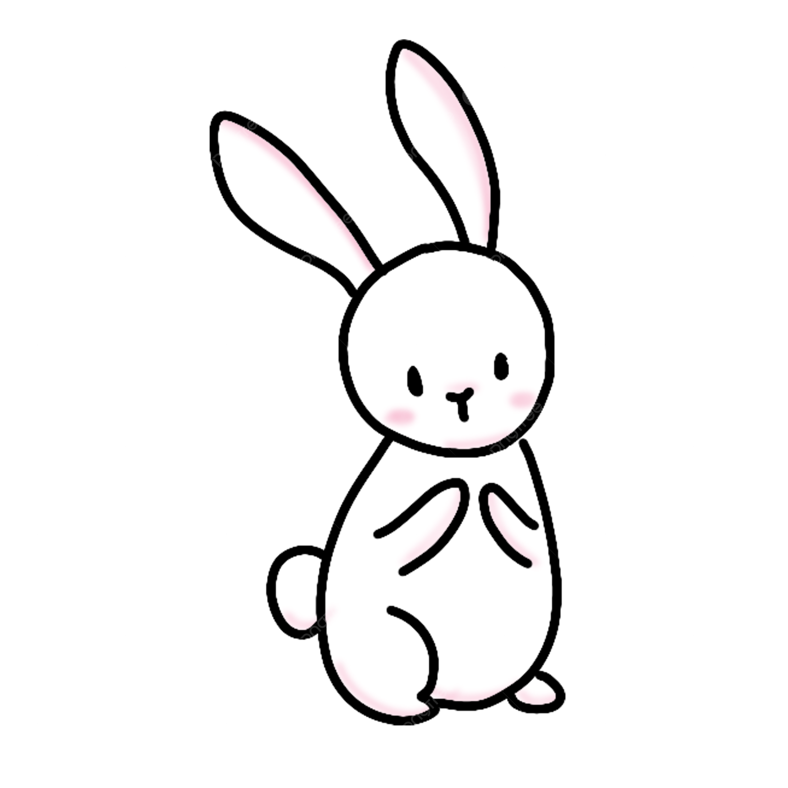
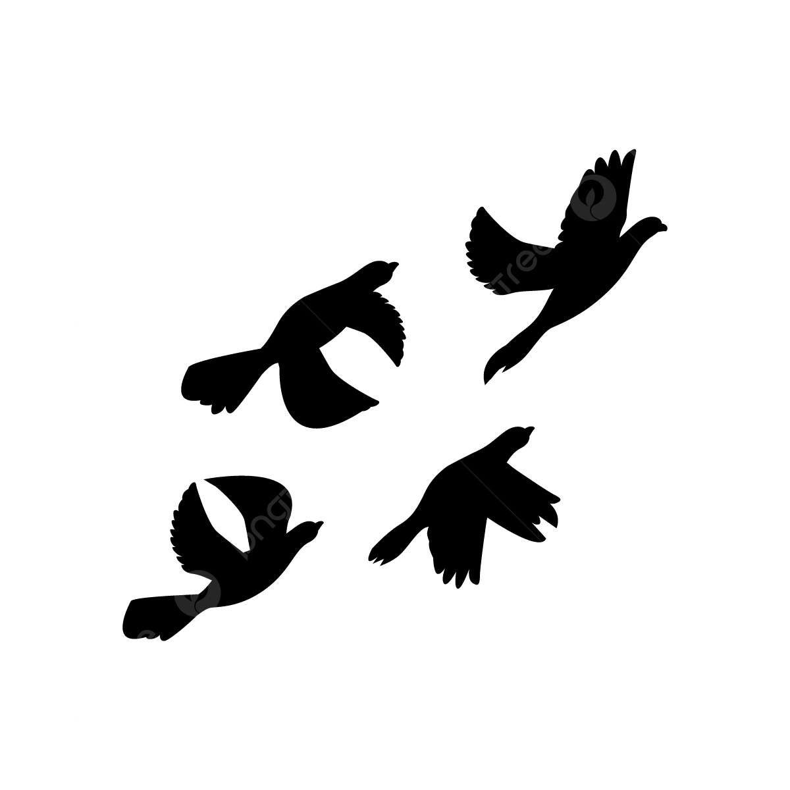
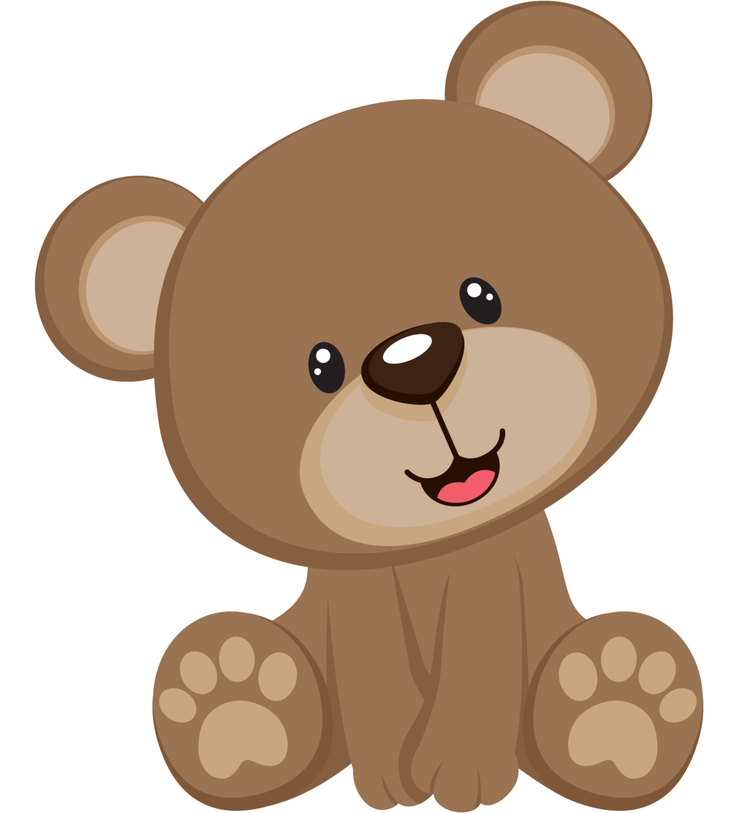
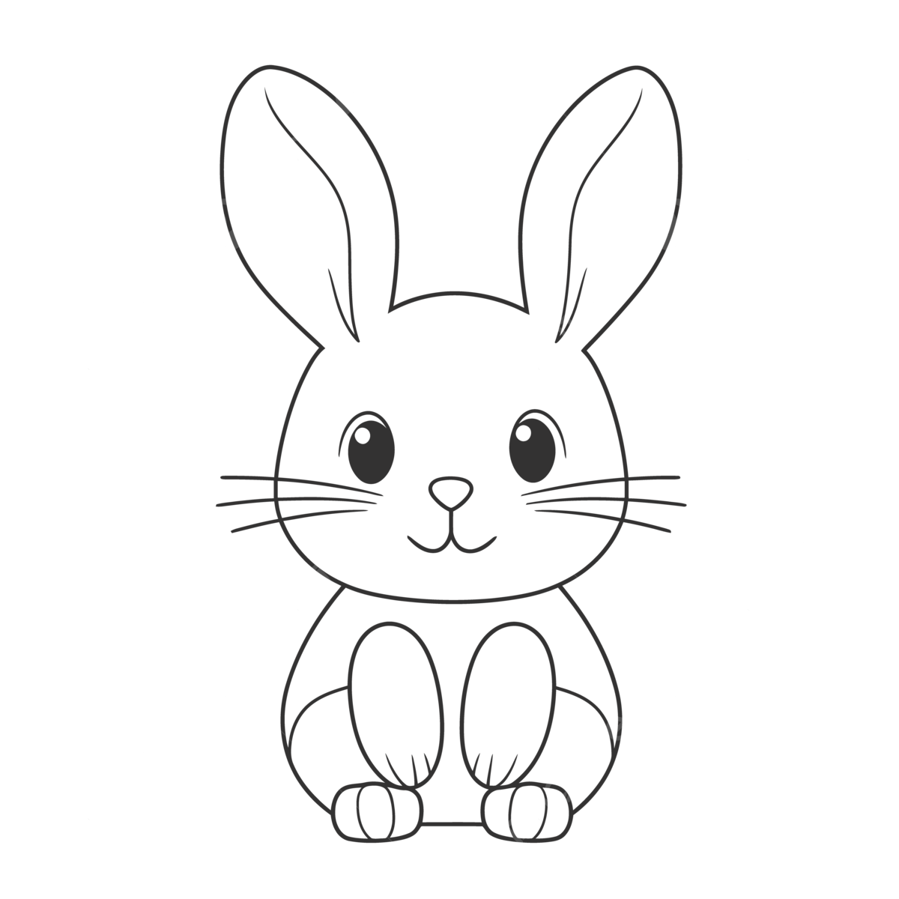
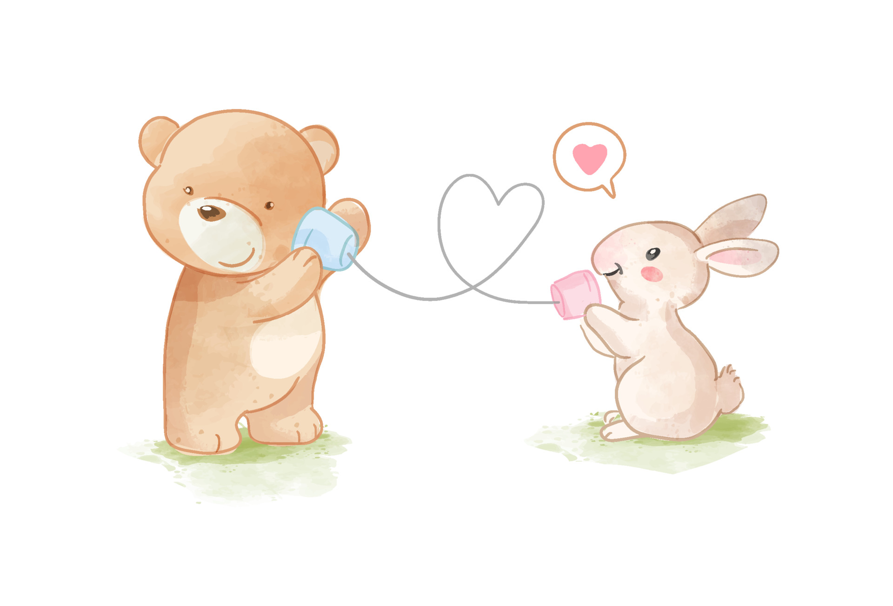
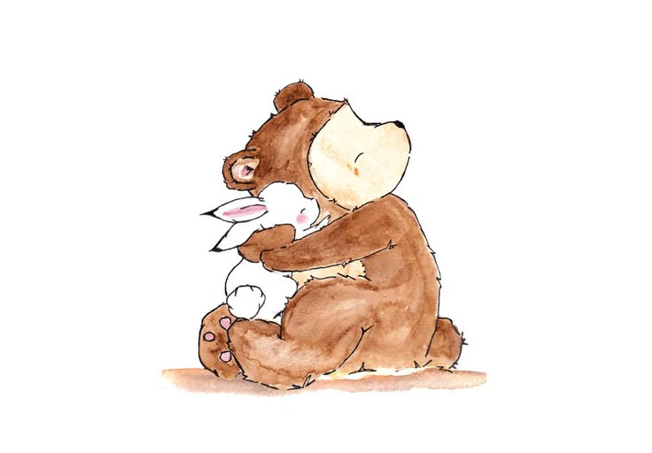
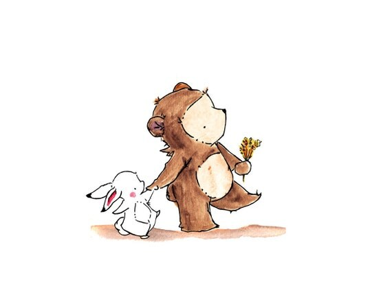

Si Kelinci ~28 Februari
🥰🥰🥰🥰...Hai sayang...🥰🥰🥰🥰 Sesuai janjiku, kulanjutkan cerita si kelinci kala itu
Selamat Membaca Sayang

Once upon A Time, hiduplah seekor kelinci yang begitu takut akan dunia luar. Dia takut untuk mencoba melakukan suatu hal yang dirinya tidak yakin bisa.

Seekor kelinci itupun merasa bahwa hidupnya adalah ketakutan. Takut untuk memulai, karena tidak yakin dengan hasil. Hasil adalah ketakutan terbesar dari kelinci imut tersebut.

Kelinci itu iri melihat burung yang berkicauan di atas pohon, terbang bebas tak takut jatuh. Mereka selalu bersama dan berpasang-pasangan, sedangkan si kelinci hanya bisa diam sembari melihat semua keindahan yang tak bisa dia lakukan.
Hanya meratapi nasib dan tidak ada perjuangan untuk berubah sama sekali. Sekali lagi karena apa? Ya, karena TAKUT.

Saat si kelinci ingin mencari makan, dia dipertemukan dengan seekor beruang imut dan lucu yang sedang menggendong madu manis dan wortel ditangan kirinya. Beruang itu pun melirik si kelinci yang terlihat kelaparan dan menawarkan wortel yang ia pegang.

Si kelinci tersenyum dan mendekati beruang dengan suasana hati yang seakan mendapat harapan serta jawaban dari semua pertanyaan dalam hidupnya. Kata TAKUT dalam hidupnya sontak menghilang begitu saja.

Mereka pun saling berinteraksi dan berkenalan. Juju, itu nama seekor beruang yang lucu dan imut. Kebaikan hatinya memberi secercah harapan bagi hidup si kelinci. Juju adalah representasi dari suatu hal yang selalu memberi kenyamanan, kehangatan, ketenangan.

Dari interaksi tersebut, timbul rasa untuk saling menjaga dan melindungi diantara keduanya. Sekarang kelinci tak lagi merasa takut, tak lagi merasa sendiri, tak lagi untuk selalu merasa dirinya tak berharga.

Sekarang Juju akan selalu menjaga si kelinci. Si kelinci akan selalu berada didekat Juju dan hidup dengan penuh kedamaian
Thank You ~ From Jo : LOVE YOU BABE